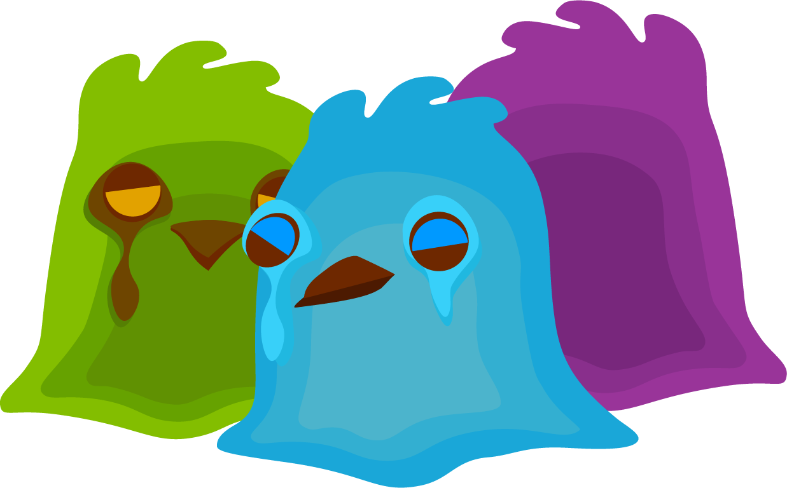
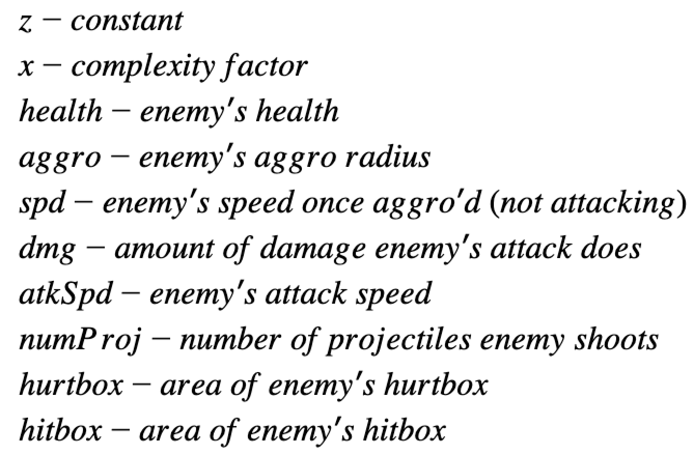
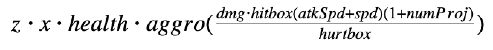
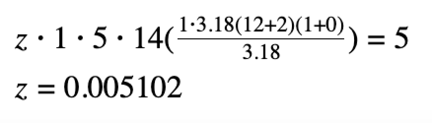

In this post, I explore how we could have taken a more computational approach to balancing our enemies in the recent WolverineSoft Studio release, DREAMWILLOW.
One of my biggest regrets on DREAMWILLOW was waiting too long to begin balancing the various systems in the game. Level design was pushed off until the last second, and because of it,
we didn't notice some glaring issues. As the lead designer on the enemies pod, I played a large role in the frantic balancing process that followed--which essentially consisted of several consecutive
days of playtesting and tweaking. By this point, we had five different enemies in the game, and not much of a baseline to start off of.
Looking back on it, I think we ended up in an okay place with the progression of difficulty in our game (despite the feedback loop that the AI companions posed).
However, after the game's completion and a month or so to ruminate, I sought out to try and find a better, more systematic approach to balancing enemies in our future games (or at least provide a good
baseline when starting the process).


After some great advice from the wonderful Jordan Ajlouni, I tried to break the enemies down into their numerical components, and construct a formula
to "score" their difficulty. I was met with surprising difficulty in trying to find good references for character balancing formulas online, but what I did find was an
RPG monster level calculator (along with a list of stats it takes into account) and the
damage calculation formula used in the mainline Pokemon games--good enough for me.
The monster level calculator--while not a directly applicable to our twinstick shooter--gave me a sense of what kind of variables I should be taking into account (swapping out stats like elemental attributes for
more applicable ones, like hitbox sizes). From the Pokemon damage formula, I was able to gather a decent format for factoring those variables in: big fraction with additive properties multiplied on top
and subtractive ones multiplied on the bottom.

Plugging the values into the formula on a google spreadsheet yielded a decent spread ranging from 0-10, a satisfyingly sweet range for easy comprehension.
Furthermore, the algorithm's ranking of the enemies turned out to be almost exactly how we ended up ranking them through our trial-and-error balancing method, huzzah!
The only difference is that we tended to treat ghouls as slightly more challenging than goop birds, while the algorithm states they should be absolute pushovers compared
to the rest of the cast. This tells us that the formula probably places too much emphasis on movement speed (ghouls are stationary enemies) and maybe not enough emphasis
on being a projectile-user enemy. That said, we also often put ghouls in spots around levels that gave them a bit of a tactical advantage--like across bodies of water or on the back ranks
of hordes of other enemies. To account for this, I can continue to up the complexity factor until the ghoul fits where I think it should, but then the formula begins to lose its meaning as
it quickly shifts from being an objective, numerical predictor to a thinly veiled subjective contest with my bias running the show.
What I've learned from this is that the formula and spreadsheet method is an extremely quick and simple way of finding a solid baseline for balancing enemies (or any system for that matter)
in a game. Sure, the rankings it spit out weren't
If you've read this far, thanks so much! I hope you enjoyed it. You can check out DREAMWILLOW here; the project is really special to me and I'm super proud of it.